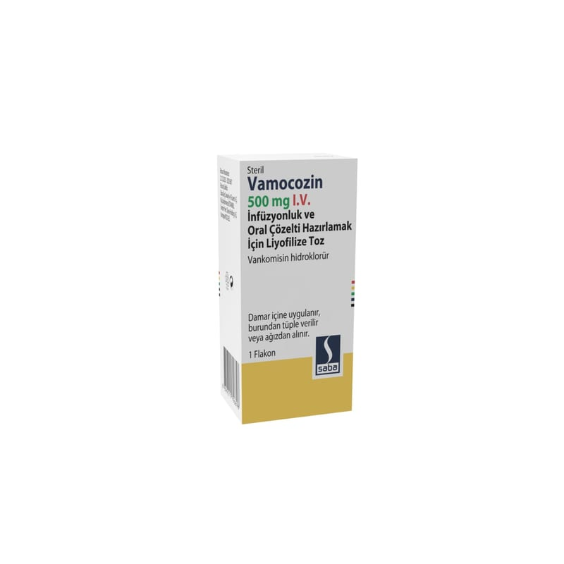

Vamocozin 500 mg I.V. İnfüzyonluk ve Oral Çözelti Hazırlamak İçin Liyofilize Toz (1 Adet)

Ne için kullanılır
KT · Bölüm 1VAMOCOZİN etkin madde olarak vankomisin içerir. Vankomisin, ‘glikopeptidler’ adı verilen bir grup antibiyotik grubuna ait bir antibiyotiktir. Vankomisin, enfeksiyonlara neden olan bazı bakterileri yok ederek çalışır.
VAMOCOZİN’in etkin maddesi olan vankomisin hidroklorür üretiminde balık peptonu kullanılır.
VAMOCOZİN, gözle görülebilen yabancı madde içermeyen homojen, beyaz veya kirli beyaz ila açık ten rengi liyofilize toztur.
VAMOCOZİN tozu, infüzyon veya oral solüsyon için bir çözelti haline getirilir.
VAMOCOZİN infüzyon yoluyla, tüm yaş gruplarında aşağıdaki enfeksiyonların tedavisinde kullanılır; • Deri ve deri altı dokuların enfeksiyonlarında, • Kemik ve eklem enfeksiyonlarında • Pnömoni adı verilen akciğer enfeksiyonlarında, • Kalbin iç tabakasının enfeksiyonunda (endokardit) ve ciddi cerrahi operasyonlarda riskli hastalarda endokardit gelişiminin önlenmesinde.
Vankomisin, yetişkinlerde ve çocuklarda, Clostridium difficile isimli bir bakterinin neden olduğu, mukozaya hasar verici ince ve kalın bağırsağın mukoza enfeksiyonlarında (pseudomembranöz kolit) ağızdan kullanılabilir.